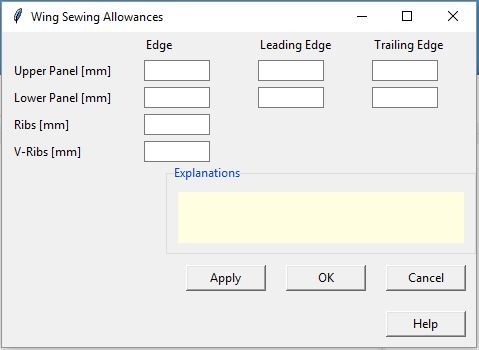

Nahtzugaben des Flügelplanes
Detaillierte Erklärungen zum Verändern der Nahtzugaben.
In diesem Fenster werden die Nahtzugaben des Schnittmusters konfiguriert. Die Einstellungen für oberes- und unteres Panel sowie für Rippen und V-Rippen erfolgt jeweils separat
